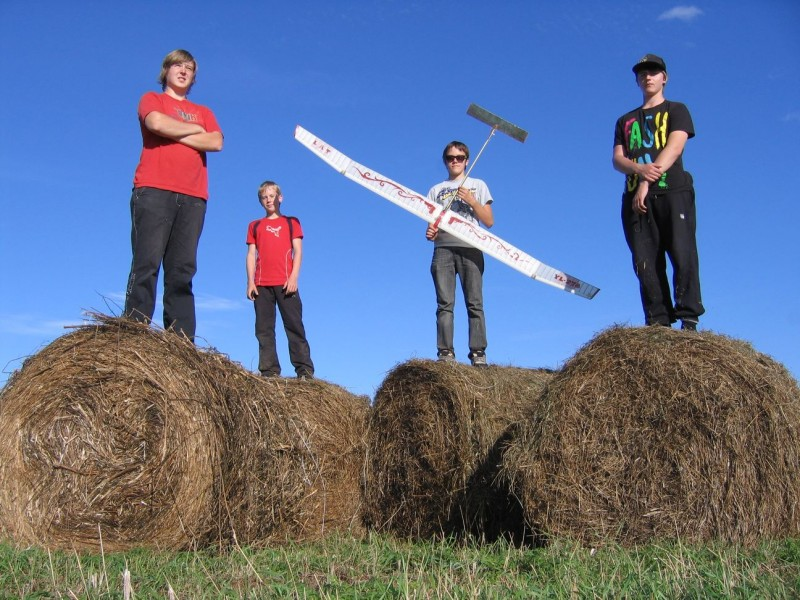

Lidmodelisms
 Jau kopš bērnu dienām man ļoti patikušas lidmašīnas, jo tās simbolizē putna brīvo lidojumu. Ar lidmodelismu nodarbojos jau kopš 7 gadu vecuma un tas vienmēr mīlēts sirds dziļumos.
Šādu darbību galvenais mērķis ir sniegt iespēju bērniem un jauniešiem pašiem veidot lidaparātus no materiālu izjušanas un apstrādes līdz pat gatavā veikuma palaišanai gaisā.
Šeit iespējams apgūt spējas modelēšanā, konstruktīvu domāšanu un tehniskās jaunrades pieredzi. Apgūt darba prasmes, strādājot ar dažādiem materiāliem, lietojot sadzīvē izmantojamus instrumentus, darbarīkus un tehniku. Katrs pulciņa audzēknis izgatavo atbislstoši savām spējām dažādus lidmodeļus. Audzēkņi piedalās dažāda mēroga valsts un starptautiskās sacensībās.